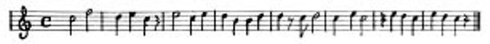

Adnan Benk, Edip Cansever, Nuran Kutlu, Tahsin Yücel
SONA KALSA
Usul usul konuşuyorlar aralarında
Denize bakıyorlar bazen –çatalını gezdiriyor biri tabağında–
Gölgesi bir kuş ölüsü
Karşıda yeni budanmış ağacın
–Olsa, başlangıçlar sona kalsa–
Kolyesiyle oynuyor kadın –tabağımda soyulmuş elma–
Saatime bakıyorum sık sık
Kapıyı gözlüyorum arada
Biraz soğuk mu geliyor ne –kapatır mısın–
Sinirli bir kırmızılık suya batıyor
Düşünüyorum, ansızın bir dost yüzü mü
Görmemişim de yıllarca.
Gelse
Değişmiş çok, yaşlanmış da
Sigaramı yakıyor durmadan
İstemem diyemiyorum –ama yakmasa–
Konuşuyoruz –konuşuyor muyuz–
Yazmayı bırakmış çoktan
Gerçi bir roman taslağı varmış kafasında
“Bir elimde elma, elmada bir el”
Diyorum
Hayretle bakıyor yüzüme
Bir bardak bira içiyor, çekip gidiyor az sonra.
Kadranı kırmızı saat
Plasterle tutturulmuş kırık cam
Şurda burda plastik çiçekler
Evet, aralık kapıdan soğuk geliyor
Tam kalbimin üzerine bu akşam.
Ölüm
Sen en güzelsin bu saatlerde
Büyütmüş yetiştirmişsin beni
Söyler miyim hiç sana hayran olmasam.
Bugün de ince, bugün de kırıldı kırılacak
Bugün de
Tam nerede kalmışsam.
Adnan Benk: Bir şiir, şiirse, her şeyden önce biçimsel bir özelliğinden kendini ele verir. Anlatacağı, ileteceği ne varsa, biçimde görülür. Daha konuya falan girmeden birtakım denemeler yaptık senin şiirinin üstünde. Biri şu: Bir, iki, üç, dört ve beş heceli sözcükler kullanmışsın. Toplamı 142 sözcük. 30 tane tek heceli, en çok da (45) üç heceli sözcük kullanmışsın. Bunların şiirin içindeki dağılımı herhalde gelişigüzel olamaz. Sözcükler de birer öğeyse, bunların dağılımında bir mantık arayabiliriz.
Edip Cansever: Tek hece kaç tane dedin?..
Adnan Benk: 30.
Edip Cansever: Çoğu “bir” oluyor.
Adnan Benk: Beş heceli de altı tane var. Ağırlık üç hecelilerde. Örneğin birinci bölümde iki tane iki heceli var. İki tane de beş heceli. Bu iki heceliye, şiirin iki heceliyle başladığını da göz önünde bulundurarak, ses dizesinin ilk sesini, temel sesi verirsek, öteki sözcükleri de, gene hece sayılarına göre değerlendirirsek (İki heceli = do, üç heceli = fa, vb.) şöyle bir biçimlendirmeye varabiliriz:
Her biçimlendirme gibi, bu da görece ve saymaca. Ama, şiirdeki gizli bir biçimi, dolayısıyla da anlam yapısını, daha bir açıklıkla sezmemizi sağlayabilir. Nitekim, bu müzik tümcesi, altı dizelik ilk bölümün müziksel tümcesi, bu bölümün sonlanmış, temel çelişkisini, şiir boyu geliştireceği öğeleri saptamış olduğunu gösteriyor.

Edip Cansever: Sesi biçimleştirerek biçimin üstüne bir örtü çektin. Benim için şaşırtıcı bu, böyle bir soru beklemiyordum. Ama öteden beri düşündüğüm bir şey var, burada ne kadar geçerlidir, bilmem, ama istersen onu açıklamaya çalışayım. Son çalışmalarımda şiirde dış sese ve iç sese çok önem vermek istemiyorum. Dış ses dediğim, uyak, ses benzerlikleri vb... İç ses ise, bir dizeden öbür dizeye kıvrılırken, dizelerin birimindeki ve başlangıcındaki seslerin uyumu. Örnek olarak söyleyeyim: Orhan Veli, “Dalgacı Mahmut” şiirinde “İşim, gücüm budur benim” diyor. Üç “-m” var, bu bir iç sestir, aynı zamanda, tek dizede olsa bile; ya da Behçet Necatigil’de “Çok çiğ çağ”, Ç’lerle sağlanan bir iç ses biçimidir. Bense son günlerde şöyle düşünmeye başladım: şiirin içinde sesi gezindirmek. Elimden gelse uyak ve ses benzerliklerini atacağım. İç sesleri ve dış sesleri attıktan sonra ne getirebilirim yerine? Ben şiirde akustik diye bir şey düşünüyorum, ses dağılımını düşünüyorum: şiiri bir yapı, bir mimari olarak ele almak, seslerin dağılımını, tıpkı konser salonundaki gibi şiirsel yapıda dağıtmak ve ortaya çok değişik bir ses çıkarmak. Bunu çok küçük çapta da olsa son kitabımda yaptım, ya da düşündüm hiç değilse. Ses dağılımı, yani akustik. İyi bir dağılım elbette şiirin içeriğinden gelen biçimdedir, sestedir. Şiirde, şiirin tema’sında bir yavaşlık, bir sessizlik varsa, ses dağılımı da yavaş olacaktır. Şiirde sert, çıkışlı, kavgalı, öfkeli birtakım durumlar varsa, bunun da sesi başka türlü olacak ve şiirsel yapıda dağılacaktır. Böyle bir deney son zamanlarda kafamı kurcalıyor. İnsan şiiri çoğu kez yazdıktan sonra düşünüyor.
Adnan Benk: Böyle yazılmış yayımlamadığın bir şiirin var mı?..
Edip Cansever: Var.
Adnan Benk: Örnek olarak bu konuşmaya koyalım. Ama sen ses dağılımı derken, “Gölgesi bir kuş ölüsü” dizesindeki ö, ü seslerini kastetmiyorsun...
Edip Cansever: Bu iç ses. Gerçi burada düşünülmüş değil bu.
Adnan Benk: Hayır, düşünülmüş. Gölgesi bir kuş ölüsü, ölüm büyütmüş, söyler miyim? Ölüm temasının kendine özgü bir sesi var.
Edip Cansever: Evet, var: Bunu, dediğim gibi, akustikle karşılamak istiyorum. Son bir kitabım çıktı: Bezik Oynayan Kadınlar. Orada bu akustik denemesini yaptım. Nereye kadar başardım, bilemiyorum. Bu şiirlerle aşağı yukarı aynı zamanda yazılmış şiirler.
Adnan Benk: Peki şöyle bir örgü de var: Bölümlerin dize sayısına bakarsan 6, 6, 11, 5, 4, 3 diye gidiyor. İlk iki bölümde durağan. Sonra birden genişliyor, birden daralıyor, sonra gitgide küçülüyor. Yalnız bu şiir için söylüyorum. Kitabındaki öbür şiirlerde bunun olduğu yer var, olmadığı yer var.
Edip Cansever: Burada aralıklar benim için çok önemli. Şiirde bir aralık koyuyorsam, bir anlatım sona eriyor demektir. Onun sona erdiği yerden tekrar başlaması bazı alışkanlıklara bağlıdır. Dediğim gibi, iki ya da üç sözcüklü bir dizeyle bitiyorsa bir bölüm, aralıktan sonra tek sözcüklü bir çıkış yapabilirim. Ve bunu tek bir sözcük üstüne kurmuş olurum.
Adnan Benk: Tek, ya da iki sözcüklü dizelere bir bakalım: “gelse” var, “ölüm” var, bir de “bugün de” var.
Tahsin Yücel: “Diyorum” da var, dize olarak alırsak.
Adnan Benk: Bunları art arda dizerek okuyalım: “Gelse diyorum ölüm bugün de”...
Edip Cansever: Zaten bu şiirin başı, ortası ve sonu oldukça iyi bağlanmış.
Adnan Benk: Biçimsel olarak hemen göze çarpan bu tek sözcüklü dizeler, onların düzeyinde şiirin ana temasını ortaya koymuyor mu?..
Edip Cansever: Tek heceliler üstünde, özellikle “bir” sözcüğü üzerinde belki bir ipucu verebilirim: Bende “bir” çok geçer. Birçok sözcüğü soyutlamak isterim. Örneğin benim için şunun, onun bardağı yoktur da “bir” bardak vardır. Belirsiz bir bardak vardır. Yani bardağın işlevi çok yaygın olabilmeli. O yüzden “bir” sözcüğü çok geçer şiirlerimde.
Adnan Benk: Yani “bir”i kullanmanın nedeni bağlandığı sözcüğü tek yönlülükten kurtarmak...
Edip Cansever: “Bir” bardak, “şu” bardak değil kesin olarak. Kırmızı bardak değil, belirli bir biçimi olan bardak değil. Böylece bardağı soyutlamış oluyorum. Soyutlayınca da şiirdeki geçerliliği daha önem kazanıyor.
Adnan Benk: Peki, geçerliliğin ölçüsü ne sence? Ne zaman bir sözcük geçerli oluyor? Geçerlilikten ne anlıyorsun?..
Edip Cansever: Şiirsel yük bakımından, şiirsel değer bakımından...
Adnan Benk: Şiirsel değerlilik dediğin çok yöne çekilebilmesi mi?
Edip Cansever: Biraz öyle. Benim için bir şiirde birçok şiir vardır. İnsanda da böyledir bu. Bir insan yüzünde birçok insan yüzü vardır. Bu insan yüzü şunun yüzüdür diyemem kolaylıkla, kimse diyemez sanırım. Hem zaman sorunu nedeniyle diyemeyiz, hem güncel olarak diyemeyiz: yüzümüz çok değişkendir, tek yüzümüz yoktur. Şiirde de bu böyle. Ayrıca şiirin devingenliği var. Şiir yazılıp bittikten sonra sürekli biçimde devinir, değişir. Bazı şeylerini yitirir, kendine birtakım eklentiler alır. Bu, zaman içinde en azından, böyledir. Bununla da kalmaz, şiir giderek aynı şairin yazdığı öteki şiirlerle de bir savaşıma girer. Bu arada kimi şiirler tümüyle yenilgiye uğrar, kimileri ayakta kalır, kimileri de öne çıkar.
Adnan Benk: Metinlerarası ilişkiyi anlatıyorsun sen...
Tahsin Yücel: Evet, metinlerarası ilişki ve alımlama...
Edip Cansever: Neden biz falanca şairin şu şiirleri güzeldir deriz? Önce birçok şiir yazmıştır ama, o şiirlerin çoğu az önce sözünü ettiğim savaşımda yenilgiye uğramıştır. Ortadan kalkmışlardır, ama büsbütün de yok olmamışlardır. Zaten onlar olmasa, öbürlerini çok iyi anlayamayacağız. Ama ne de olsa ayakta kalan şiirler olmuştur. Zaman zaman kitaplarda da görülebilir bu: Bir kitap öbür kitaptan daha iyi olabilir, ne kadar zorlasa kendini şair, bir noktada doruğa çıkmışsa, öteki yapıtları gölgede kalabilir.
Tahsin Yücel: Ama bu, şiirin kendi kendine devinimi, değişmesi değil. O şiir yazıldıktan sonra değişikliklere uğrar dedin; uğrar ama, değerlendirmeler bakımından uğrar. Örneğin ben bu şiirle ilk kez karşılaşıyorsam başka, Edip Cansever’in şiiri olduğunu bilirsem başka, öbür şiirlerini okuduktan sonra başka türlü değerlendiririm, ama gene de bu şiir, bu şiirdir.
Adnan Benk: Bu şiir bu şiirdir mi acaba?..
Edip Cansever: Hayır, diyorum.
Adnan Benk: Bana da öyle değil gibi geliyor. Okurken yapacağımız katkılarla çok değişikliğe uğrayabilir şiir.
Edip Cansever: Kuşkusuz. Okuyucu da bir şeyler katıyor çünkü. Sonra okuyucular arasında da ayrımlar var, ya da anlamada birtakım ayrımlar var. Niye biz iki kişi arasında düşünüyoruz şiiri? Bugün üstünde konuşacağımız için birkaç kez okuduğum bu şiir şimdi bana bile başka türlü geliyor. Yazdığım gün belki düşündüm bunları, belki düşünmedim. Yazılalı aşağı yukarı bir yıl oldu ama, bugün başka şeyler de düşündüğümü görüyorum.
Adnan Benk: Herhalde sen şiirini kurarken de okundukça değişikliğe uğrasın diye kuruyorsun.
Edip Cansever: O kadar da değil. O, şiirin öz varlığında olan bir şey. Şiirin huyu dediğimiz bir şey o. Yani ben şiirimin çok çeşitli anlamlara gelmesini istemem. Neyi söylüyorsam tam yerini bulmasını isterim. Bu kadar salt şiirden yana değilim.
Adnan Benk: “Çatalını gezdiriyor biri tabağında” diyorsun. Ben biri dediğin zaman ötekini bekliyorum.
Edip Cansever: Var, aşağıda.
Adnan Benk: Yok. Kadın var.
Edip Cansever: “Kolyesiyle oynuyor kadın.” Belli ki artık tabağında çatalını gezdiren bir başkası, kolyesiyle oynayan kadın değil. Şunu ortaya çıkarmak için yapılmış bu: Kadının karşısında bir erkek var. Eğer kadını kolyesiyle belirtmiş olmasaydım, öbürünün erkek olduğu belirmezdi, iki arkadaş da olabilirdi. Yani burada bir aşk başlangıcı var. Belli ki burası bir meyhane ya da lokanta.
Adnan Benk: Evet, öteki yerine kolyesiyle oynayan kadın geliyor. Uzun uzun konuşuyorlar aralarında, fakat ne konuştukları belli değil. Şiirde bir tek konuşan sensin, o da dolaysız olarak bir kez.
Edip Cansever: “Kolyesiyle oynuyor kadın”, ben de bir yanda oturuyorum. Ama kalkıp da “ben de karşı masadayım, elma yiyorum” gibi, iki üç dize yazarak sözü uzatmaktansa, “tabağımda soyulmuş elma” deyince, ben de bir başka masada oturduğumu, aşağı yukarı belirtiyorum.
Adnan Benk: Şimdi “çatalını gezdiriyor biri tabağında / kolyesiyle oynuyor kadın” dizelerindeki eylemlere bakarsak etken olmayan, kendine dönük bir devinim görüyoruz. “Çatalını gezdiriyor”un hiçbir amacı yok. Tabak boş. Konuşmanın kesilmesiyle ortaya çıkan sessizliği dolduruyor o “gezdiriyor” sözcüğü. Kadın’ın kolyesiyle oynaması da öyle. İkisi de sevişmenin suskunluğu, heyecanı içinde.
Edip Cansever: Bir dalgınlık, suskunluk, dikkatsizlik... Henüz seni seviyorum, beğeniyorum gibi bir gevezelik yok ortada.
Adnan Benk: Daha o gevezeliğe gelmemişler zaten, tam bir başlangıç bu. İki kişinin birbirini kollaması. “Denize bakıyorlar bazen” derken dış bir görüntüyü getiriyorsun, ama yarıda kesiyorsun bunu: –çatalını gezdiriyor biri tabağında. Daha söz bitmedi, görüntü tamamlanmadı. Üç dizeyle giriyorsun sen araya, sonra gene görüntü ve bağlıyorsun. “Kolyesiyle oynuyor kadın”, yukarıdaki görüntünün tümleyici parçası. Araya girdiğin yere de, bütün şiiri besleyen eğretilemeyi yerleştiriyorsun: “Gölgesi bir kuş ölüsü / ... yeni budanmış ağacın”. Bunlar birbiri üstüne katlanabilen iki kanat. İkisi de sekizer heceli. “Karşıda” ekseni üstünde dönerek bir araya geldiler mi, bir eğretileme çıkıyor ortaya.
Edip Cansever: Bence bu bölümün en can alıcı noktası: “–Olsa, başlangıçlar sona kalsa–”.
Adnan Benk: Evet, o en açık yeri, fakat en canlı yeri de bu. “Gölgesi bir kuş ölüsü / ... yeni budanmış ağacın” ve “ölüm / Büyütmüş yetiştirmişsin beni”... Budanmış ağaç yaşamsa, ölüm yaşamı besliyor demektir. Ölüm ve yaşam üstüne edilen sözler arasında bu bana değişik gibi geldi. Ölümle yaşamın iç içe girmesi değil de, ölümün yaşamı beslemesi.
Edip Cansever: Evet, bunu çok iyi bulmuşsun. Ama benim kısa şiirlerimden biri bu. Uzun, bir kitaplık şiirlerim de var. Fakat burada hiç kopmadan aynı havayı sürdürmüşüm. Başlangıç neyse, ortası da, sonu da o olmuş. Rengi, müziği, kokusu neyse, hiçbiri birbirinden kopuk değil. Belki bu yüzden başlangıçta görülen o ölüme yakınlık, hatta biraz da hafif karamsarlık havası sonuna doğru geliyor. Ama sonunda bir sürprizle karşılaşıyoruz gene. Ölüm yaşamı besleyen bir şey. Aslında burada saygı ölüme karşı değil, yaşama karşı. Bunu şundan da doğrulayabiliriz: ben bazı şiirlerimi arka arkaya yazar, resim sergisi gibi düşünürüm. Ressamlar tablolarını yan yana getirerek sergi açarlar ya! Örneğin şöyle diyelim: Orhan Peker’in “İtfaiyeciler”i, danaları, atları ya da Degas’nın balerinleri gibi belirli bir dönemde yapılmış resimlerin birbirini tamamlaması ve kollaması vardır. Benim şiirlerimde de bu var. Örneğin, bu şiirle aynı dönemde yazdığım bir şiirde “ve annem olmamış gibi doğmuşum” diyorum. Ölümü anlayış biçimim benim doğmamış olmamın özdeşidir. Önce bir doğmamış olmak vardır, sonra da ölüm. Ölüm de bir çeşit doğmamış olmaktır. Ama doğduğuma göre ölüm zaten var. Ölüm dirimi beslemiş oluyor ve başlangıçtaki o karamsar hava gene karamsarlığını sürdürüyor ama, yaşamaya dönük bir sona doğru gidiyor. En son üç dizede de bu var: “Bugün de ince, bugün de kırıldı kırılacak / Bugün de / Tam nerede kalmışsam.”
Adnan Benk: Şiirin kurgusunda bana en ilginç gelen şey günlük bir olaydan çıktığın halde birden düzey değiştirmen. Sonra tekrar günlük yaşantıya geliyorsun. Bu çok belirgin: Örneğin dışarıda gördüğün bir olay var, yanda kesip birden eğretilemeye geçiyorsun, düşünceye bir dönüş, ardından da gene günlük yaşantıdasın. Bir öykü gibi. Fakat bir yerde, anlamı sonradan belirlenecek bir kanca atıyorsun: “Biraz soğuk mu geliyor ne” ve sonuna doğru onun yanıtı: “Evet, aralık kapıdan soğuk geliyor / Tam kalbimin üzerine bu akşam.”
Edip Cansever: Soğuk, düpedüz bizi üşüten soğuk olsa ne diye şiirde kullanayım. Ama kalbimin üzerine gelmesinin bir anlamı var. En can alıcı yere gelmesi gerek ki ben arkasından ölümden söz edebileyim. Sanıyorum, çünkü yazarken bütün bunlar tam olarak böyle düşünülmüyor. Şiiri matematiksel olarak düşünmek olanaksız.
Adnan Benk: Bu arada da meyhaneyi dolaylı yoldan betimliyorsun. Örneğin “kapatır mısın” ile garson çıkıyor sahneye. “Çatalını gezdiriyor biri tabağında” ile “tabağımda soyulmuş elma” bakışımlı gözlemler. Bu kez de sen çıkıyorsun ortaya, şiir kişisi olarak çıkıyorsun.
Edip Cansever: Yanıt vermek için belli bir kuramdan yola çıkayım ama, biliyorsun, kuramlar şiirde pek o kadar geçerli değildir. Bir şairin işi, bir yerde kuramı da bozmaktır. Fakat bugüne kadar bozmadığım, bozmak istemediğim T.S. Eliot’ın bir “nesnel karşılık” kuramı var. Şiire bir çeşit dekor hazırlamak bu. Benim burada anlatacağım şeylerin dekorunu kurmam gerek. Garsonuyla, bardaklarıyla, masasıyla, insanlarıyla tümünü anlatmam gerek. Yoksa, niye karşıdaki ağacın gölgesi ölü bir kuş olsun? Her şeyi birtakım nesnelerle vermeyi her zaman yeğlerim. Vazgeçemediğim bir şeydir bu. Eliot’ın nesnel karşılık kuramından yola çıkıyorsak coşkularımız, duygularımız, düşüncelerimiz şiire aktarıldığı zaman oradaki nesnel karşılıklarını bulmalı. Bir şiir, içindeki nesnelerle, içindeki yaşam biçimleriyle, ilişkilerle ve daha bir sürü öğeyle oluşturulur. Ve ben buna çok inanıyorum. Bu şiirde gereksiz ayrıntı sayılabilecek şeyler aslında bir fon gibi gerekli olan öğelerdir.
Adnan Benk: Günlük ayrıntı diyebileceğimiz şeyleri ne zaman kullansan, ardından hemen başka bir düzleme geçiyorsun. Örneğin “Evet, aralık kapıdan soğuk geliyor / Tam kalbimin üzerine bu akşam” demeden önce, tam karşıt bir düzlemi, değerden yoksun nesneler düzlemini veriyorsun: kırık cam, plastik çiçekler, vb. Senin şiirselliğin, belki de hiçbir ayrıcalığı olmayan nesne ve olaylar düzlemiyle seçkin duygular ve düşünceler düzlemi arasındaki karşıtlıktan kaynaklanıyor. Bu arada şunu da sorayım: “Kadranı kırmızı saat”in kırmızılığı yukarıdaki “sinirli kırmızılık” ile bağlanıyor. Elbet hesaplıyorsundur bunları.
Edip Cansever: Hayır. Şiir ancak yazıldıktan sonra belki bu hesaplar ortaya çıkabilir. Nitekim şu anda, konuşmamızda ortaya çıkıyor bunlar. Ama, daha önceki “sinirli kırmızılık” ile “kadranı kırmızı saat” arasındaki ortak kırmızılığı, yazarken düşünmüş değilim.
Adnan Benk: Ben de buna şaşıyorum. Nasıl düşünmez olursun? Güneşin, hele batan güneşin, yuvarlaklığı ve kırmızılığı bir yanda; öte yanda, yuvarlak kadranı kırmızı olan saat. Bu gibi biçimsel benzerliklerle örülmüş şiirin; kaldı ki, batan güneş nasıl akşam saatini belirtiyorsa, duvar saati de (aslında kırmızı değil o) batan güneşin kızıllığını yansıtıyor. Saatleşen güneşle, güneşleşen saat. Örgü, doku dediğimiz bu işte.
Edip Cansever: Kırmızılık belki de bu şiirin kendi rengi. Şiiri anlatırken düşüncesi budur, teması şudur diye anlamıyoruz şiiri. Sen demin müzik kattın, ben renk diyorum, hatta belirli bir konusu var, korkunç jestleri var şiirin diyorum. Ben şiirin yaratıldıktan sonra çok önemli bir yaşamı olduğuna inanan bir insanım. İnsan gibi yaşadığına inanıyorum. Ve kendimi yaşama hazırlar gibi kuruyorum şiiri de. Bu nedenle renkler birbirlerini buluyor, ayrıntılar zaman zaman kopuyor, birbirlerini yakalıyor. Belki de bir bütüne gitmek için o ayrıntıları da biraz silmek gerekiyor, çünkü şiir hiçbir zaman ayrıntı değildir, hatta sanat hiçbir zaman ayrıntı değildir. Ayrıntı vardır ama görünmeyen, silinmiş ayrıntılardır. Resimde de bu böyle, sen resmi sık sık ele aldığın için söylüyorum. Baktığımız zaman, işte bu ağaç, bu ağacın yaprağı, bu da altındaki yaprağın damarı diye bakmıyoruz resme. Bu ayrıntılar silindikten sonra kalan şey oluyor resim. Bir şeyi yürütmek, sürdürmek için ayrıntı gerekli ama ayrıntıların okurun gözünde yok olması da zorunlu, ayrıntı bir marifet gibi kalmamalı.
Adnan Benk: Birinci bölümde başlangıçları anlatıyordun. “Gelse” ile başlayan bölümde ise “son”u anlatıyorsun. Bu bölümden çıkana göre senin “son” anlayışın durağanlık: yakıyor / ama yakmasa; konuşuyoruz / konuşuyor muyuz?; kafasında bir roman taslağı var / yazmıyor; bir elinde elma / elmada bir el; vb. Her şey birbirini yok ediyor. Böyle bir düşüncen mi var? Son demek bu mu senin için?..
Edip Cansever: “Olsa, başlangıçlar sona kalsa”, oradan başlayalım. Burada belirli bir kadınla erkek usul usul konuşuyorlar. Konuştukları aşk sözleri olabilir. Genellikle güzel saydığımız başlangıçlar yavaş yavaş eskir, bir “son”a gider. Son hiçbir zaman başlangıç gibi güzel değildir. Başlangıç her sondan güzel olduğu için orada bir dilek var. Başlangıçlar sona kalsa acaba nasıl olur? Daha güzel olur mu diye bir dilek. Bu bizim günlük yaşamımızda her zaman vardır. Örneğin kendini düşün, çok sevdiğin bir şeyi yiyorsun, en iyi parçayı sona bırakmak ister insan. Çocuklar gazoz içerken, bilmem dikkat ettin mi, bir yudum alırlar sonra kaldırıp bakarlar, bir yudum daha alırlar bakarlar. Hep başlangıcı koruma isteğidir bu. İnsanlarda böyle bir duygu var. Bu da bir ilişkidir. Başlangıç iyi bir ilişki olduğu için o başlangıç sona kalsa sanırım daha güzel bir şey olacak. Bu bir istek olarak ele alınabilir.
Adnan Benk: Olmayacak bir şey isteniyor. Çıkmazını kendinde taşıyan bir istek.
Edip Cansever: Durağanlık diye belirli bir ölçüsü yok bu şiirin. Bir masada oturuyorum “gelse” diyorum. Acaba böyle birisi geliyor mu, gelmiyor mu? Gerçekten gelmiş mi, yoksa düşlüyor muyum? O çok belli değil burada. Belki de gelmiyor. Evet, öyle birisi gelecek ve masama oturacak, bir arkadaş olacak bu belli, bana kendinden söz edecek bir parça. Ondan sonra ben sıkılacağım ondan, gitmesini isteyeceğim. Ve diyorum ki “bir elimde elma, elmada bir el”. Elmada bir el olağandışı bir şey, bu nasıl oluyor? Biz aslında organlarımızı duymayız, unuturuz, yani gövdemizi duyarak, bilerek yaşamayız. Şöyle bir örnekle bunu açıklayayım: Masama oturmuş şiir yazıyorum. Hiçbir zaman şiir yazarken bunu beynimin aracılığıyla yazdığımı düşünmem, beyin diye bir organı düşünmem. Yazdığım dizeler de bana beynin yansısı olabilirmiş gibi gelir. Beyin de o dizelerin ya da sözcükler yığınının yansısı olabilir. Burada, elmada el, elde elma olması çok olağandır.
Adnan Benk: İlgini hangisinde yoğunlaştırırsan öbürü ona takıntı gibi gelir. Bir elinde elma dediğin zaman yoğunluğu elmaya veriyorsun. Elmada bir el deyince de yoğunluğu, ağırlığı ele veriyorsun. Böyle bir dengede ikisi birbirini gideriyor. Bir onu büyütüyorsun, bir öbürünü.
Edip Cansever: Ama bunun asıl anlamı gövdeyi unutma sorunu. Ben burada zaten dalgınım. Durağan diyorsun, belki de durağan, hepsi iç içe geçmiş. O sırada elmada el, elde bir elmayla bunu pekiştirmiş olabilirim.
Tahsin Yücel: Gelse ile başlayan bölümde başlangıç bölümünden kopulmuyor.
Edip Cansever: Evet, kendi kendimeyim burada. Gerçek ya da düşsel bir kişiyle karşı karşıyayım. Zaten o çiftin birbirleriyle olan konuşmaları artık önemli değil. Ben artık şiirde sona doğru gidiyorum. Ve söyleyeceğim sözü kesinleştirmek istiyorum. Onun için belki, belki diye konuşuyorum hep burada, kendime bir yol arıyorum. Gene “Tam kalbimin üzerine” doğru soğuk geliyor ve ölüm duygusuna geçerek sona yaklaşmış oluyorum. Artık o kadınla erkeğin aynı masada oturmaları, konuşmaları beni ilgilendirmiyor. Oradan çoktan çıkmış oluyorum, kendime dönük, kendime özgü şeyler anlatmış oluyorum.
Adnan Benk: Sonra da doğrudan doğruya ölüme seslenişin başlıyor.
Tahsin Yücel: Aslında denge falan dedik ya, “Tam kalbimin üzerine bu akşam” dizesiyle bitemez miydi şiir? “Ölüm” dizesinden sonra başlayan bölümde meyhane falan pek kalmıyor. Bulunduğumuz uzamın hiçbir önemi yok. Yukarıdaki bölümde de ölümü duyduğumuza göre, bundan sonraki bölümleri koymasak da olmaz mıydı, diye soruyorum kendi kendime.
Edip Cansever: Şiirin bitişi yalnız anlamına da bağlı değil. Şiirin bir de ses olarak bitmesi, tamamlanması var. Örneğin cam ustaları vardır, üfleyerek cam işleri yaparlar. Diyelim ki bir güleptan yapacak. Üfler, güleptan biçimini alır, altında da hatta son bir düğüm noktası kalır. Beykoz güleptanlarını bilirsin. Bu cam işçisine, üflemeye ne zaman başlayıp ne zaman son veriyorsun diye sorsak herhalde şaşkın şaşkın yüzümüze bakar. Nasıl yaptığını çok iyi biliyordur ama, bir “anlatılmaz”ı biliyordur. Şiirin de bitişi bazı şeylere bağlıdır. Bazen anlam bile biter de, insan gene de bir ses koymak ister yanına, ya da ses biter, anlam bitmez. Burada şiiri anlam bakımından incelersek asıl anlamın sona doğru bir yücelti kazandığını görürüz. Diğerleri, dediğim gibi, havayı hazırlıyor, dekoru hazırlıyor ve sonunda bir yere varmak istiyor şiir. Eğer bu son bölümü yazmasaydım bu şiir bence pek bir şey anlatmazdı.
Adnan Benk: Kaldı ki, en son üç dizeye de yazık olurdu.
Edip Cansever: O üçlük, ölümün yaşam olduğunu daha anlamlandırmak, zenginleştirmek, daha bir göze batar hale getirmek için yazılmış olabilir diyorum. Hep kuşkulu konuşuyorum, çünkü yazarken gerçekten bunlar düşünülmez. Sen bu şiir üzerine konuşacağız dediğin için ben de bir yabancı gibi, bir başkası yazmış gibi yeniden okudum şiiri, daha bir yakınlaşmaya çalıştım. Elimde belki bir iki ipucu kalmıştır. Örneğin, bu şiirimi nerede düşündüğümü biliyorum, bundan kurtulamam. Gerçi siz bilmiyordunuz ama, gene de bilecektiniz, çünkü bu besbelli bir lokanta ya da meyhanedir. Orada gerçekten kadın da, kırmızı saat de vardı. Belki de ben o saate bakarak onu şiire koymuşumdur. Görmeyi şiirleştirmek değil şiir, ama bazen böyle sürprizler de olabilir şiirde.
Adnan Benk: “Tam nerede kalmışsam”da 7 hece var. 7 heceli tek dize o. Son dize. Gerçekten de seninle birlikte kırıyor şiiri. Kırık bir son’a bağlıyor.
Edip Cansever: Kırılmayı, ya da sürmeyi yalnızca dizelerdeki hece sayısına bağlamak doğru olur mu? Ben, sese bağlamak diyorum.
Adnan Benk: Kırılma seste yoksa, hece sayısında ortaya çıkabilir. Şair belki düşünmüyor bunu, ama öyle de yapıyor işte. Sorun şu: cam ustası ne zaman soluk verip ne zaman keseceğini söyleyemez elbet. Ama cam ustasının yerine kompresörlü bir makine koydun mu, bütün bunları hesaplamak zorundasın. Biz o durumdayız.
Edip Cansever: Evet, siz eleştirel bir bakışla yaklaşıyorsunuz şiire. Ben aynı yöntemle yaklaşamam elbet. Benimki şiirsel dediğimiz dil, sizinki çözümleyici bir dil. Ben de sizinle birlikte çözümlemeye kalkarsam, hem şiiri açıklamış olurum ki karşı koyduğum bir şey benim bu, hem bir şeye de yaramaz. Onun için ben daha uzaktan bakmak zorundayım şiire. Çünkü, belki de benim dediğim gibi değil bu söylediklerim. Masama gelen insan gerçek mi, düş mü bilmiyorum diyorum. Bugün böyle diyorum. Acaba bu şiiri yazdığım gün gerçek olarak mı düşünmüştüm o gelen insanı? Onu da pek bilemiyorum.
Nuran Kutlu: Tahsin demin, “Tam kalbimin üzerine bu akşam” ile bitse dedi. “Tam nerede kalmışsam” ile birinci bölüm arasında bir ilişki kurabiliriz. “Yeni budanmış ağacın”, “Olsa, başlangıçlar sona kalsa”yı tamamlıyor. Ama anlamsal açıdan da bu son dize olmasa şiir bence eksik kalacaktı.
Edip Cansever: Hatta bu son dörtlük ve üçlük, şiiri kurtarıyor demiyorum ama, şiirin içinde, şiiri yeniden başlatıyor. Çok gerekli. Bu olmasaydı, ben bu kadar şeyi niye yazdım diye düşünürdüm. Ama onunla birdenbire bir kalkınma var. Hem anlam bakımından, hem ses bakımından, onlar olmasaydı, bu şiiri yazmasam da olurdu diyorum.
Adnan Benk: Yani böyle bir düşünceden mi gidiyor senin şiirin?
Edip Cansever: Hayır. Belli bir duygudan, belli bir düşünceden kesinlikle yola çıkmam başlangıçta. Şiir başlar ve sürer, ne geleceğini o zaman düşünürüm. Bitmişse kendiliğinden bitmiştir, onu anlarım. Bu bir alışkanlık sorunu, yazma sorunu. Belli bir düşünceden hareket etmem, çünkü düşünce şiirin kendisidir. Şiirden bağımsız olarak şiire düşünce getirilemez. İthal edilemez. Şiirin kendisi olarak düşünce şiirde yürür. Çok ortada bir söz vardır: İyi duygularla iyi şiir yazılmaz. Şiirle birtakım duygular çıkarılır ortaya.
Nuran Kutlu: Çeşitli şairlerde ölüm teması çok sık geçiyor: Melih Cevdet Anday, Cahit Külebi, Fazıl Hüsnü Dağlarca ve diğerlerinde. Sizde de öyle. Belki biraz anlam değişikliği var, çünkü siz, başlangıç sona kalsa diyerek ölümü biraz değiştiriyorsunuz. Bunun acaba bir açıklaması olabilir mi?
Edip Cansever: Ölüm yalnızca anladığımız anlamda kullanılsa, şiirlerde belki de ölümün üstüne bu kadar düşmek doğru olmaz. Burada ölüm sözcükleri geçiyor, ölüm yaşamla özdeşleşiyor. Öyle olunca artık ölüm sözcüğü geçmiş, geçmemiş, önemini yitiriyor.
Nuran Kutlu: Yaşamla özdeşleşmesi önemli, birçok şairde var.
Edip Cansever: Bunu Rilke de söyler ya, insan ölümünü içinde taşır, der. Yaşlandıkça bu belki daha da artıyor, daha bir ölümü düşünüyoruz.
Nuran Kutlu: Örneğin Cahit Sıtkı’nın “35 Yaş” şiiri... 35 yaşında ölmüş gibi, garip geliyor bana...
Tahsin Yücel: Ölümü değil de ölülerimizi belki içimizde taşıyoruz.
Edip Cansever: Yaşamımız içinde birçok duyguları tek tek de duyarız. Birleştirerek de duyarız. Biz yaşadığımız toplumda gücenik ve buruk yaşıyoruz biraz. Biraz bile değil, çokça buruk ve çokça gücenik yaşıyoruz. Bu zaman zaman ölüm kavramıyla karşılanıyor, ama isterseniz ölüm sözcüğünü siz bir yana atın, bu başka türlü de karşılanabilir, ölümü biraz değiştirerek de bu burukluğu, bu tedirginliği verme çabası olabilir.
Tahsin Yücel: Aynı eksen üzerinde yer alan değişik temalarla verilebilir, olumlu olumsuz, hareketli hareketsiz karşıtlıklarıyla...
Adnan Benk: Ama ölüm ve yaşam gibi insanın büyük ana temalarından bunca şair yararlanıyorsa, bunun bir sırrı olmak gerek. Şaire ayrı bir kolaylık mı sağlıyor bu büyük konular?..
Edip Cansever: Şöyle başlayalım istersen, son zamanlarda çok konuşuluyor bunun üstünde: Türkiye’de, sanatçılar da dahil, biz bireyliğimizi tam bulmuş insanlar değiliz. Bu yeni yeni oluyor. Ölüm dediniz; isterseniz alkol diyelim. Alkol de bizim şiirimizde vardır. İçki çeşitleri olarak da vardır, genel olarak da. Ama, bir düşünürsek, Cahit Sıtkı dediniz, Cahit Sıtkı bir şiir yazar: “Hoşgeldin beyaz peynir, kavun” der. Tam çilingir sofrasını anlatır. Oysa, ben alkolden çok söz etmişimdir, bu yüzden de çok kınayanlar çıkmıştır, ben alkolü bir mit olarak görüyorum. Bir örtü olarak, çağımızın, günümüzün bir örtüsü olarak görüyorum. Yani, alkole sığınmak değil, alkolle neşelenmek değil, alkole dadanmak değil, alkolü bir mit olarak düşünmek. Alkolle birlikte düşünüyorum. Yani, altından şiirin temasını, konusunu, düşüncesini, duygusunu, birçok şeyleri çeksek de, alkol tek başına bile günümüzden sonraya kalıcı bir şey olarak görünebilir. Mit diyorum ona ben. Şimdi örneğin buradan şuna geçebiliriz. Kafka’da çok görülüyor bu. Diyelim Şato’da, şöyle bir baktığımızda bizim günlük yaşamımıza hiç benzemeyen bir yaşama vardır. İlişkiler çok başka ilişkilerdir. Diyaloglar çok değişiktir. Ve hatta bazı konuşmalar bir, iki, üç anlamda ele alınır ve yürütülür. Bir türlü varılmayan bir şato da vardır, biz buna birtakım şeyler yakıştırmaya çalışırız. Örneğin bürokrasi deriz, gelecekteki bir baskının, korkunç bir olayın daha önceden duyulması deriz. Hayır, ben hiç öyle görmüyorum. Aslında bizim yaşadığımız asıl gerçek hayat Kafka’nın ortaya koyduğu hayattır da, biz kendi sıradan yaşamımızı onun üstüne çekmişizdir ve bu yaşamımızı, gerçek yaşamanın kendisi sanırız. Kafka’nın Değişim hikâyesi için de söyleyebiliriz bunu. Hiçbir zaman hamamböceği değildir oradaki, insanın tam kendisidir. Kafka’yı birçok şeye bağlamak isteyenlere karşı, buna “aşkın gerçekçilik” deniyor. Bence Kafka yorumunda en doğrusu bu olsa gerek.
Tahsin Yücel: Evet, Dava da öyle. Birtakım gerçekçilerden çok daha gerçekçi olduğu kuşkusuz Kafka’nın.
Edip Cansever: Alkolü almıştım şiirde, ölümü de ele alabiliriz. Ölüm, tam anlamıyla. Örneğin Cahit Sıtkı’daki yapay ölüm değildir. “Yaş otuz beş, yolun yarısı eder” deyip aslında baştan sona kadar, eskilerin, şiir oturtmak dedikleri şeyi yapmıştır. Benim için çok başarısız bir şiirdir o. Bugün artık öyle şiir yazılmıyor, daha doğrusu ben öyle yazmıyorum. Ölümle yaşamın, ya da daha başka çelişkilerin dramına ya da bunların toplamı olan bir trajiğe geçme gereksinimini duyuyorum. Bu böyle olunca da, işte şiirde değişiklik oldu diyorlar. Son yirmi yıldır süren bir değişiklik bu, kökten bir değişiklik. Belki de şiiri artık layık olduğu yere doğru götürme çabası oluyor bu değişiklik. Tam başarıldı mı, başarılmadı mı, bilemem ama, başkaları adına konuşacak değilim, kendi adıma söylüyorum, benim çabam budur. Onun için ölüm de geçecek, karşıtlıklar da geçecek, alkol, dediğim gibi mit olacak, hiçbir zaman şu masada içeceğimiz herhangi bir içki, bir sıvı olmayacak, bir neşe başlangıcı olmayacak. Eskilerin bolca kullandığı şey bunlardı. Hatta Orhan Veli’nin “Bir de, rakı şişesinde balık olsam”ı, o zamanlar için belki gerçeküstücü bir öğe idi şiir için, bir değişiklikti, tersten almaydı işi. Ama bugün artık bunların, hiç olmazsa gününü tamamladığına inanıyorum. Hatta hatta, birçok karşıtlıkların bugün kullanılması gerek. Bunları yüceltim noktasına getirmek gerekiyor bence. Yoksa hiçbir iz kalmayacaktır bugün yazılandan yarına.
Tahsin Yücel: Evet, Edip’in söylediği bence, gerçek şiire ya da diyelim ki güncel şiire, çağdaş şiire geçiş oluyor bir bakıma. Örneğin Melih Cevdet’le konuşurken de geçti. Yahya Kemal’in “Sessiz Gemi”si, güzel buluşlarla süslenmiş bir söz kurgusu yalnızca. Okulda çocuğa verilen “tahrir” ödevinden fazla bir şey getirmiyor. Besbelli oturmuş, ölümü anlatacağım demiş, sonra da uygun sembolleri sıralamış. Bu şiir öyle değil. Fazıl Hüsnü’nün de birçok şiiri öyle değil.
Edip Cansever: Ufak bir katkıda bulunabilir miyim? Sizi doğrulayacak nitelikte bir şey. Ben güzel şiir yazmak istemiyorum. Şimdi şairin kalkıp da ben güzel şiir yazmak istemiyorum demesi biraz saçma gibi görülebilir, ama güzel şiir yazmak istemediğim de bir gerçek. Bizden önce güzel şiir yazmış çok şair vardı. Ustalığına çok güvendiğim, hiçbir zaman küçümseyemeyeceğim bir Ahmet Muhip vardı. Ahmet Muhip’in çok güzel diyebileceğim on şiiri var. Fakat Ahmet Muhip, Tahsin Yücel’in dediği gibi, güzel şiir yazmıştır. Belli bir temayı kullanmıştır o arada ama, özellikle şiiri güzel yazmak istemiş, bununla da yetinmiştir. Cahit Sıtkı’da da bu vardır, Orhan Veli’de de vardır. Daha başkalarının da belli bir döneme kadar yazdıkları şiirde bu vardı. Şiir değiştiyse, demin de açıkladığım gibi, bu şekilde değişti. Buna değişme de diyebiliriz, rayına oturdu, gerçek şiirin sürecine girdi de diyebiliriz.
Nuran Kutlu: “Ben güzel şiir yazmak istemiyorum,” demiştiniz, biraz açıklayabilir misiniz?
Edip Cansever: Gene örnekle anlatırsak, Ahmet Muhip’in “Olvido” şiirini çok severim ama, bir “Olvido” şiiri yazmak istemem. Güzel şiir, fakat tek güzelliklere yokum ben. İnsan bugün Homeros’u tekrar okumak isterse, baştan başlayıp sona kadar okumaz. Bir parça vardır, aklında kalmıştır, onu okur. Shakespeare okuyacaksa, Shakespeare’i baştan sona kadar okuyayım demez, örneğin Hamlet’i açar, oradan bir parça seçer, onu okur ve bir şiir tadı alır. Ben şiirin böyle okunmasından yanayım. Tek güzel şiirlerin dilden dile gezmesine, ezberlenmesine karşıyım. O güzelliğe karşıyım. Elbette şiirin, güzelden, buna estetik değer, şiir yükü, şiir değeri, dilsel değer de diyebiliriz, ayrı bir gidişi, yürüyüşü olamaz. O anlamda söyledim yani, tek tek güzellikler olarak düşünmüyorum dedim. Benden önce zaten Tahsin Yücel belirtti bunu.
Adnan Benk: Onlar güzel şiir yazmışlar derken belli bir kalıba göre mi yazmışlar demek istiyorsun?
Edip Cansever: Hayır, kendi kalıplarına göre.
Adnan Benk: Peki, örneğin Orhan Veli’lerin, Oktay Rifat’ların getirdiği şiir de bir “güzel şiir”e karşı yazılmıştı. Onlar da güzel şiir yazmak istemiyorlardı.
Edip Cansever: Evet ama, demek bu dönem değişiyor. Onlar da bir güzelliğe karşı çıktılar ama, hangi güzelliğe karşı çıktılar? Örneğin şiiri arıtmak istediler, yalınlaştırmak istediler, daha güncele getirmek istediler. Bunu yaparken haklıydılar, yaptıkları da iyi oldu. Ama yapılan her şey zamanla değişiyor. Onun üzerine tekrar bir şey yapmak gerekiyor. Karşı çıkmak anlamında söylemiyorum bunu. Onlardan yararlandık, birtakım şiir ustalıkları öğrendik. Bunları nasıl bir yana atarız?
Adnan Benk: Onlar olmasaydı belki de sen burada o plastik çiçek sözünü kullanmayacaktın.
Edip Cansever: Evet, tabii, tabii.
Adnan Benk: Onlar belli birtakım kalıpları yıkmışlar, siz de birtakım kalıpları yıkıyorsunuz. Sizi de yıkacaklar ergeç.
Edip Cansever: Öyle olacak elbet...
Adnan Benk: Ben bunu şunun için söylüyorum, bugünkü şiire varmak diye bir şey nasıl olabilir? Çünkü bugünkü şiire varmak, bugünkü şiire açılmak dedin mi gene de bir kalıbı örnek alıyorsun kendine demektir... Bu gibi değerlendirmeleri bırakmak en iyisi galiba...
Edip Cansever: Deminki sözü bütünlemek istersek, şöyle diyebiliriz kolaylıkla: Bugün yazılan şiirler de Homeros’tan, Shakespeare’den daha güzel değil. Ahmet Muhip’ten, Cahit Sıtkı’dan söz açtık. Bugün yazılan şiirler de onlardan daha güzel, daha üstün şiirler değil. Hiçbir zaman şiirde böyle bir gelişme olamaz. Şiirde değişimler, başkalaşımlar olur. Bugün böyle yazılıyorsa, böyledir ve onların değeri hiç inmez. Bir şairin şiirleri arasında birtakım kavgalar olur, birçoğu yenilgiye uğrar diyorum ya, şiir ortamında da olur bu. Ve başka şairler, başka şairlerin şiirlerini eskitebilirler...
Adnan Benk: Şunu sormak istiyorum: Değişen ne var ki, o değişen şey adına eski bir kalıp yıkılıyor, başka bir şey geliyor?
Edip Cansever: Kalıp üzerinde durmuyorum, değişen şey deyince...
Adnan Benk: Şiire değişik bir şey getiriyorsan, bu getirdiğini nereden alabilirsin?
Edip Cansever: Yaşadığım toplumdan, bireylerarası çatışmadan, birey-toplum arası çatışmalardan. Bunlar, bugün daha bir kavranılarak anlaşılmakta. Belki dünya ile ilişkilerimiz de çok yoğunlaştı. Bir yerde ufak bir savaş olasılığı belirse, duyuveriyoruz. Eskiden bir yığın can gidiyordu, hatta savaş başlamış oluyordu da neden sonra duyuyorduk, değil mi? Bugünkü şiir, dünya ülkelerini de birbirine yaklaştırdığı gibi, toplum birey ilişkilerinin, bireylerarası ilişkilerin de daha yakından, daha farkına varılarak anlaşıldığını gösteren şiir oluyor bence. Onun için değişik, yoksa kalıp değişikliği değil söz konusu olan.
Adnan Benk: Demek ki sen bu değiştirme gücünü ya da bu değiştirme gereçlerini, malzemesini, ya da seni değiştirmeye iten şeyi çevrende mi buluyorsun? Çevre mi bunu sana veriyor?
Edip Cansever: Çevrenin etkisi çok büyük ama, yalnızca çevre değil. Toplumda duyuyoruz bu değişikliği, birçok kesimde duyuyoruz.
Adnan Benk: Şimdi hepsi güzel şiir, güzel şiir diyoruz, demek ki şiirsellik denen bir şey var o da değişmiyor...
Edip Cansever: Yani şiirde şiir yükü mü demek istiyorsun?
Adnan Benk: Evet. Yani o şiir yükü denen bir şey var. Ona varıyorlar ama buna rağmen gene de şiirler değişiyor.
Edip Cansever: Evet, insan da değişiyor.
Adnan Benk: Peki, senin şiirindeki şiirselliğin, senin bugün, bu çevrede yaşayan bir insan olman bakımından, ayrıcalığı neresinde? Bu çevreyi yansıttığı oranda mı bu şiirin ayrı bir şiir olduğunu söyleyeceğiz? Eğer şiirsellik hepsinde birse neresi değişecek peki?
Edip Cansever: Belki içinde yaşadığım toplumun, içinde yaşadığım çevrenin ve içinde yaşadığım kendimin bilincine, daha iyi varıyorum. Ya da bunu hiç değilse kendimden uzaklaştırmıyorum. Ahmet Muhip ve Cahit Sıtkı şiirin gelişine göre belki kendilerini fazlaca ortaya koymaktan çekindiler, ya da çekinmediler de yazamadılar, yazmak istemediler. Alışılmış bir şiir geleneğine uydurdular kendilerini. Bunun farkına varılmasıyla şiirde bir değişiklik oldu, diyorum ben.
Adnan Benk: Yani bilinçlenme yoluyla, kalıplara karşı bir özgürlük savaşı mı bu?
Edip Cansever: Hepsi olabilir. Başkaldırma da olabilir, baş eğerken o baş kaldırmayı unutmadan baş eğme de olabilir. Dediğim gibi, benim şiirim daha çok çelişkiler, dramlar bütünüdür.
Adnan Benk: Anladım, fakat belirli bir geleneğe karşı gitmenin çeşitli aşamaları olur...
Edip Cansever: Onu hemen söyleyeyim. Belirli bir geleneğe karşı koymak değil. Benim amacım hiçbir zaman böyle olmadı. Daha önce de söyledim. Daima daha önceki değerlerden yararlandım...
Adnan Benk: Fakat bu bağlantı, sonunda, o eski değerlere karşı büsbütün bir yabancılaşmaya kadar gidiyor.
Edip Cansever: Böyle dersek daha doğru belki.
Adnan Benk: Fakat bu şiirde belirli bir konu var, bir görünüm var, belirli bir yer var, kişiler var... Bana bu şiiri anlat deseler, anlatabilirim.
Edip Cansever: Bu şiirde dediğimize göre yoğunluk ölüm temasıdır.
Adnan Benk: Hayır, temasını demiyorum, dekorunu diyorum. Demek ki, eski geleneklerden kalma dekoru bugünkü şiirde de alıkoyuyorsun?..
Edip Cansever: Çok eskiden gelen bir dekor demedim ben.
Adnan Benk: Dekorun eskiliğinde değilim. Ama dekordan yararlanmak, dekor kaygısı, eski bir şiir alışkanlığı...
Edip Cansever: O dekoru ben, nesnel karşılığı dekora dönüştürerek anlatmaya çalıştım. Yoksa nesnel karşılık kuramıyla ya da o sözün anlattıklarıyla yetinmem gerekirdi. Açmak için kullandım dekoru.
Adnan Benk: Hayır senin kullanımından söz etmiyorum ben, dekor öğesine başvurmandan söz ediyorum. Dekor bu şiiri anlatılabilecek bir şiire dönüştürüyor.
Edip Cansever: Bir şey daha var. Çok değişik bir şeye inanıyorum diye söylemiyorum. Şiir elbette bir soyutlama işidir ama eninde sonunda somutlama işidir. Somutlamadan, şiirde hiçbir şey elde edebileceğime inanmıyorum ben. Bu somutlama kaygısından ötürü burada dekor dediğimiz, nesnel karşılık dediğimiz birtakım öğeler yer alıyor.
Adnan Benk: Bu nesnel karşılık kaygısı, Eliot’da da var. Orada da gelip gidiyorlar, kadınlar, konuşuyorlar...
Edip Cansever: Tabii, tabii.
Adnan Benk: Peki, buna uyduğuna göre, şiirin şu ya da bu kalıbını zorlaman nerede? Şiirsellikte bütün öteki şairlerle berabersin. Bir üstünlüğün olamaz, Dıranas da çok şiirseldir, Melih Cevdet de, sen de. Peki, siz nereden kendinizi ortaya koyacaksınız? Nereyi zorlayacaksınız?
Edip Cansever: Ama şimdi şunu anlamam gerek. Siz derken kolektif bir şeyden mi söz açıyoruz?..
Adnan Benk: Evet, özellikle günümüz şairlerinden.
Edip Cansever: Hepsi başka başka, ben kimin neyi koyduğunu tabii burada anlatamam.
Adnan Benk: Peki sen nereden kendini ortaya koyacaksın? Nasıl yapacaksın ki bu şiir öbür şiirlerden başka bir şey olsun. Yalnızca sözcük düzenlemesiyle olur mu bu?
Edip Cansever: Mitten söz açtım, dramdan söz açtım, insan çelişkilerinden söz açtım. Bunları daha yoğun duymamdan ötürü elbette ki şiirin yapısında da bazı değişiklikler olacaktı.
Adnan Benk: Onu anladım da, hangi kalıpları kıracaksın demek istiyorum?..
Edip Cansever: Kalıp kırılmaz, başka şeyler kırılır, kalıp kendiliğinden kırılmış olur. Yoksa bir şair kalıp kırmaz. Örneğin Yahya Kemal’in aruzunu kırmak için hece, heceyi kırmak için serbest nazım diye düşünmüyorum ben sorunu. Ve böyle olmaması gerekir. Belki böyle olmadığı için de daha iyi olur diyorum. Yani bugünkü değişiklik, her dönemde bir değişiklik oluyor, tabii şiirde ama, belki bugünkü başka türlüdür, diyorum. Orhan Veli’lerin belki bir kalıp kırma gereksinimi vardı. Kırdılar, yalnız kalıp kırmakla yetinmediler, şiiri daha bir sadeleştirdiler de...
Adnan Benk: Şuraya getireceğim sözü: Örneğin izlenimciler çıkıyor, gerçekten resme yeni bir açı getiriyorlar, müzikte diziselciler çıkıyor, hepsi yeni bir anlayış getiriyor, gözümüzün, kulağımızın birtakım kalıplarını kırıyorlar. Şimdi senin bu şiirin hangi açının şiiri? Ne gibi bir açı getirmiş?
Edip Cansever: Anlıyorum, sen sözü daha çok biçime getirmek istiyorsun. Daha çok biçime getirdiğin için de, biçimde olan değişiklikten ben pek söz edemeyeceğim. Etmeyeceğim daha doğrusu.
Adnan Benk: Yani çaba biçime mi yönelik?..
Edip Cansever: Hayır, hiç biçim kaygım olmadı benim, biçim kendiliğinden nasıl geldiyse öyle oldu.
Adnan Benk: Örneğin bu şiire ne diyeceğiz, bir ad verebilir miyiz biz buna? Bir okul adı, bir akım adı?
Edip Cansever: Şart mı?
Adnan Benk: Hayır, şart değil, ama belki de şart. Ben şart olmadığına o kadar da inanmıyorum, çünkü her değişiklikte ortaya bir okul çıkmış, doğru ya da yanlış ama, tarihsel gerçek de bu. Yani şiir de bu çeşitli okulların birbirini izlemesiyle süregelmiş. Şimdi her şair, çeşitli denemeler yapıyor, fakat nedir yaptıkları? Bunun adı konamıyorsa, belki de gerçekte yapılan belirli bir şey yok!
Edip Cansever: Bu adı sanıyorum şairler koymaz.
Adnan Benk: Bugüne kadar hep onlar koymuş.
Tahsin Yücel: Başından beri yenilik dedik, toplumsal dedik, ya da çevresel şeylerle ilgili mi dedik. Şiir okuru değişti denebilir ama belki de çok fazla bir değişiklik yok. Edip’i de okuyor. Melih Cevdet’i de okuyor. Cahit Külebi’yi de okuyor. Sonra, bana öyle geliyor ki, bu şiiri toplumdaki değişiklikler de pek getirmedi. Toplumdaki değişikliklerin buna fazla bir etkisi olmamıştır. Edip Cansever’in bu çevreyi algılayışı var, nesnel değil bu, öznel bir algılayış. O algılamalarını anlatmıyor şiirinde, şiirini bu algılamaların üzerine kuruyor ve dolayısıyla şöyle bir kaygısı da yok: Ben farklı bir şiir yazacağım, yeni bir şiir yazacağım, demiyor, ben kendi şiirimi bu biçimde yazacağım diyor. Okullarda, çok genel planda alınırsa ancak, bir ölçüde geçerli olur, ama, örneğin izlenimcileri tek tek aldığımız zaman, aralarında ayrıcalıklar olabilir. Yani Edip için yeterli olan Edip Cansever’in şiirini yazmak.
Adnan Benk: İzlenimcilik de senin dediğin gibi bir algılama yoludur. Herkes gerçekten yola çıkıyor da, değişik biçimde algılıyor. Edip’in de çevresini bir algılaması var; bu algılamanın bir izlenimcilik mi olduğunu sormak istiyorum ben, nasıl bir algılama olduğunu.
Edip Cansever: Hiçbir zaman ben bir şiir kuramı ortaya koymayı düşünmedim. Böyle şiir yazanlar oldu, biliyorsun, hepiniz biliyorsunuz. Çıkış noktası yaptılar, bunların önsözünü yazdılar, bildirgelerini yazdılar; uyuldu, az uyuldu, hiç uyulmadı, bunları görüyoruz çeşitli ülkelerde. Böyle birtakım edebiyatlar oldu, geldi geçti.
Tahsin Yücel: Bunlar o kadar da güçlü değil. Örneğin Cemal Süreya’yı alsak; Cemal Süreya İkinci Yeni’nin kuramcılığını yaptı, ama eski şiiri sürdüren de yine Cemal Süreya’dır bence.
Edip Cansever: Kendi şiirinden söz etti. Topluca bir kuram ortaya çıkarmış değil.
Tahsin Yücel: Cemal’in kendi şiiri, bunu olumsuz bir yorum olarak söylemiyorum ama, onun kendi şiiri İkinci Yeni’den çok daha yenide olan şiire yakın değil midir?.. Yani kuram o kadar da önemli değil...
Edip Cansever: Şunu hemen açıklamak istiyorum. Ta başından beri, o Pazar Postası yıllarından, 1957’lerden beri, İkinci Yeni diye bir ad koydular üç beş şairin çıkışına ya da değişmesine. Gene başından beri kimse İkinci Yeni’nin bir akım olduğunu kabul etmedi. Bir İlhan Berk çıktı, İkinci Yeni’nin bir akım olduğunu savunan. İlhan Berk çok ayrı bir şair, söylediği sözler de kendi şiiri üzerinedir, kimseyi ilgilendirmez. Yani biz zaten birlikte çıkış yapmış değiliz. Onun için, demin de söyledim, konuşacaksam ben diye konuşmak zorundayım, biz diye konuşmak hakkına sahip değilim, o zaman da, ben diye konuştuğuma göre, soru bana yöneltilmeli demek istiyorum. Çünkü ben İkinci Yeni akımı diye bir akım kabul etmiyorum ki! Kuramsal bir şey değil, çünkü ayrı ayrı yazılar yazıldı, herkes ayrı bir şey söyledi. Ben hiçbirine uyduğumu sanmıyorum. Demek ki bir adı da yok yaptığımın, konmamış, belki ileride bir ad da konabilir buna. Ya da hiç konmayacaktır, şairler tek tek ele alınacaktır ileride. Ama ülkemizde şiir eleştirisi yok gibi bir şey. Çok az, ya da yeterli değil, o yüzden de hiçbir gerçek henüz açığa çıkmıyor. Şiir okuruyla şair arasında bir diyalog bile kurulmuyor. Bilemiyoruz kimin ne yaptığını, bunu kitap satışlarından da anlamaya olanak yok. Bilemeyiz. Demek istediğim, deminki sorunda sizler diyordun, bu soruyu değiştirmek gerekiyor, bir; ikincisi, hep biçimsel açıdan ele alındığı için, sen daha çok biçimsel açıdan ele aldığın için, şu biçimin yerine şunu getirdik ya da getirdim gibi bir şey söylenseydi, o zaman bunun adı da belki belli olurdu. Ama biçim kaygısından çok önce bazı anlamalar vardı. Dediğim gibi, bu toplumu anlamadan, çevreyi anlamadan tutalım, insanın bireyliğini anlamasına kadar bir değişiklikti. Bunun şiiri yazılıyorsa, bunun elbette bir biçimi de oluyor kendiliğinden. O biçim nedir? Bunun bir adı yok bence.
Adnan Benk: Çevreyi algılamak, insanın bireyselliğinin bilincine varması, bu çok geniş bir söz, sınırları o kadar belli değil. Bunun uygulamada, şiirde bir karşılığının olması gerek. Yoksa, bu maymuncuk gibi kalır; diyeceğim, her kapıyı açacak bir söz bu, bir anahtar niteliği taşımıyor.
Edip Cansever: Şöyle diyebilir miyim? O bireylikten, o anlamadan hiç değilse kaçma olmamış; dolayısıyla dar değil, geniş, bence. Örneğin Cahit Sıtkı da kendi dramını yaşamış bir insan, çok mutlu yaşamış bir insan değil herhalde. Ama şiir yazarken, kendinden, çevresinden daha başka bir şeyi, yalnızca şiiri düşünerek yazmış, bunu söyledim. Onun için dedim, ben güzel şiir yazmak istemiyorum.
Nuran Kutlu: Size bu şiiri yazdıran, iki kişinin konuştuğu bu meyhane, bu dekor değil mi?.. Dekorun bir işlevi var bunda.
Edip Cansever: Onu bilemem.
Nuran Kutlu: Yalnızca dekor mu bu?
Tahsin Yücel: Yani nesnel karşılık aslında nesnel değil.
Nuran Kutlu: Evet, bana da öyle geldi.
Edip Cansever: Ben böyle söylemeseydim de size, meyhane demeseydim hiçbir şey söylemeseydim, bu dekor da orada gözlediğim bir dekor olmasaydı, hiçbir şey değişmeyecekti. Gene de ben kendi kendime odamda oturur, böyle bir durumu yaratabilirdim.
Adnan Benk: Sorun şairin bunu görüp görmemiş olması değil, bunu seçip seçmemiş olması. Bir yanda izlenimci, nesnel, günlük gerçekle ilgili gözlemler var bu şiirde, bir de ikinci bir konuşma düzeyi var, ölümden söz ettiğin zaman. Günlük gerçekle bağdaştırmaya alıştığımız bir düzey değil bu. Acaba burada mı senin ayrıcalığın diye bağlamaya çalışıyorum. Ölümü kişileştirmişsin, ona sesleniyorsun. Oysa ölümle bir konuşma düzeyinde çevre bu kadar sıradan olmaz genellikle. Bu kadar sıradan bir çevre anlatılırken de ölüm sözüne gidilmez. Ayrı ayrı bağlamların iki öğesini, sıradan bir nesneyle yüce bir sorunu bir araya getirmek. Acaba o demin sözünü ettiğin çevreyi algılamak bu mu?
Edip Cansever: Burada hemen şunu öncelikle söylemek istiyorum: Ölüm bölümü aslında şiirin omurgası. Şiirin başlangıcından, ortasından, ayrı bir şey olmadığı gibi, tam omurgası. Öbür yazdıklarım, o varılacak noktanın serpintileri. Birbirinden ayrı şeyler hiç değil.
Adnan Benk: Ben şiirin omurgasını bunların ikisinin bir arada bulunmasında görüyorum.
Edip Cansever: Ama başta bir ayrılık olduğundan söz ettin, başta anlattıklarından sonra bu ölüm bölümü fazla geliyor, dedin.
Adnan Benk: Hayır, fazla geliyor demedim. Bu nesnel ayrıntılar plastik çiçekler falan, ayrı bir ortamın öğeleri, ölüm gibi temalar da ayrı bir bağlamın. Bunların ikisini bir araya getirmen mi acaba senin ayrıcalığın diyorum. Birini başka öğelerle düşünmeye alışmışız öbürünü çok daha başka öğelerle.
Edip Cansever: Amacım koparmak değil, koparmak hiç değil.
Adnan Benk: Hayır, bir araya getirme çabası var. Örneğin plastik çiçekleri ve ona benzer öbür ayrıntıları yaşam diye alırsak, ölümü de ayrı bir öğe olarak ele alırsak, bu plastik çiçeklerle ölüm iç içe geçmiş oluyor...
Edip Cansever: Plastik çiçek de zaten ölümdür. O plastik çiçek herhalde o yüzden seçilmiştir orada. Yoksa bir vazoda iki tane sıradan lale, ya da boyalı karanfil de olabilirdi.
Adnan Benk: İki ayrı düzeyden öğeleri bir araya getirmek, senin şiirlerinde kolladığın bir şey mi? Bunu arıyor musun? Yoksa burada bir rastlantıya mı düştük?
Edip Cansever: Senin dediğini şuraya kadar kabul ediyorum. Kopma yok, bir anlaşma var, ama sonunda böyle birdenbire yükselmeye başlaması anlamın, kopma gibi görünüyor belki. Hayır, o tam tamamlama, bence. Birbirine çok kenetlenmiş diyebiliyorum, hatta demin de söylediğim gibi, şiirin baştan sona kadar omurgası bu zaten.
Tahsin Yücel: Evet, anlamda bir kopma yok da, konuşan kişinin o plastik çiçekli ortamdan yavaş yavaş sıyrılması ve düşünce düzeyine geçmesi var...
Edip Cansever: Zaten şu baştaki iki kişinin durumu pek sağlam olsa, mutlu bir görünüş olsa, şunlar olmayacaktı: Bir kere karşıdaki ağacın gölgesi kuş ölüsü olmayacaktı, kadın kolyesiyle oynamayacaktı, adam çatalını tabakta gezdirmeyecekti. Bu ayrıntılar, yalnızca ilk yaklaşımın, ilk beraberliğin acemiliğini değil, mutlu olmak isteğinin önde gelmesine karşın, ardında bir mutsuzluğun varolduğunu gösteriyor gibime geliyor. Oradan kendime geçiyorum; kendime geçmezsem, yalnız benim düşüncem olan bu ölüm biçimini buraya yerleştiremem.
Tahsin Yücel: Yani yavaş yavaş, ilk bölümden ölüme doğru bir geliş var...
Edip Cansever: Kişilerden benleşmeye, benleşmeden de söyleyeceğim asıl söze, yani omurgaya, çatıya geliyorum.
Adnan Benk: Erkek, kadın, çatal, tabak, kapı, saat, bira, kırmızı kadranlı saat, kırık cam, plastik çiçekler gibi nesnel öğelerin yanı sıra eğretilemeler, düşünceler, izlenimler düzeyinde öğeler var. Bunlar şiir boyunca birlikte giderken son iki bölümde birdenbire bu gerçekle ilgili olan bütün ayrıntılar yok oluyor. Temalardan yalnız biri ön plana çıkıyor, hep kavramlarla konuşuyorsun burada.
Edip Cansever: Kavram nasıl olabilir ki? Şiir kavramlarla yazılmaz...
Adnan Benk: Kavramlarla yazılmaz ama ölüme “Sen beni büyütmüş, yetiştirmişsin” dedin mi, bu bir kavramdır. Ben kavram olmasına karşı değilim. Ama, nesnelle birlikteyken hep, son bölümde kavram yalnız kalıyor.
Edip Cansever: Sondaki bu iki kısa bölüm, daha önce şiirde var diyorum ben. Varolduğu için de bunu niye ayrıca düşünelim diyorum.
Adnan Benk: Ben de var diyorum, fakat hep nesnelle birlikte vardı.
Edip Cansever: Son bölümde daha da nesnel bana kalırsa.
Adnan Benk: Burada ben onu bulamıyorum, şimdi ben onu soruyorum...
Edip Cansever: “Tam nerede kalmışsam” dediğim zaman, o kaldığım yere geliyorum. Yavaş yavaş geliyorum. Önce iki kişiyi görüyorum. Sonra benim masama gerçek veya düşsel biri geliyor, gidiyor, sonra benleşiyorum, yavaş yavaş kendime doğru geliyorum. Burada iyice benleşip, düşünüyorum. Tekleşiyorum ve nerede kalmışsam deyip, yaşamı sürdürüyorum. Kopukluk neresinde bunun?..
Adnan Benk: Öğelerden biri yok oldu ama...
Edip Cansever: Hayır, gerçekle teması yok oldu diyorsun, yok olmuyor, bence. Asıl gerçek, yani ben varım burada, “ben”’e getirdim, benleştirdim şiiri, benleştirdikten sonra da bunu söyleme hakkını elde ettim. “Ben”i buraya kadar getirmeseydim, bunu söyleme hakkını elde edemeyecektim. Söylersem, bu ukalalık olarak biterdi. Hikmet savurmuş olurdum. Şiirde de hikmet olmaz.
Adnan Benk: Evet, anlıyorum. Ama gene de, iki öğeden biri daha ağır basıyor sonunda. Gerçekle kaynaşarak gidiyorsun başında, ama son iki bölümde sen seninlesin, içine dönüksün artık...
Edip Cansever: Başında gerçekle gidiyorum da, son iki bölümde düşsel olana mı giriyorum, karşıt olana mı?..
Adnan Benk: Gerçekten, hiç değilse nesnelerden sıyrılmış, kendinle kendin arasında bir soruna dönüşüyor şiir. Örneğin son iki bölümde bir tabak ya da bir çatal yok, değil mi? Niye beraber gelmediler?..
Edip Cansever: “Tam nerede kalmışsam” toplayıcı bir dize. Tabaklar, çatallar, plastik çiçekler, bunların tümü “Tam nerede kalmışsam” dizesinde zaten var, diyorum. O yüzden, bu son iki bölüm gerçekten bağımsız değil. Şiirin başı gerçekle gidiyor da sonu gitmiyor değil. Gerçekte ölüm olduğu gibi, ölümde de gerçek var.
Adnan Benk: Öyleyse, şöyle bir sonuca varabiliriz belki: Ayrı düzeydeki iki öğeyi, sıradan nesnelerle sıradışı bir yaşantıyı, dışa dönük ile içe dönüğü birleştirmek kaygısına bağlayabiliriz belki senin şiirini...
Edip Cansever: Belki çok karşıt bir şey söylüyormuşum gibi gelecek ama, sıradan olanla, sıradan olmayan arasına bir ayrım koyuyorsak, belki şiirin sonu, başına göre daha sıradan oluyor. Eğer ölüm yaşamı doğuruyorsa, sondaki ölüme hayranlık, yaşama hayranlık ise, ilk bölümlerdeki yaşam tümüyle var demektir, son bölümde de. Nesneler anılmıyor ama ölüm de bir nesne olarak düşünülebilir. Yaşam da bir nesne olarak düşünülebilir ama, çok bütünsel olarak düşünülebilir. Başta ayrıntılarıyla bir yaşam var, sonda ayrıntısız bir yaşam ya da ölüm var. Burada birdenbire bir genele dönüş var, “Tam nerede kalmışsam” deyince: Ben gene o meyhanenin içindeyim, gene oradayım, ama gün kırıldı kırılacak, belki bir akşama doğru gidiş var, belki kalkma saatim geliyor. Bu adamın şiire ne getirdiğini söyleyebilmek isterdim. Bir şair şiirine her zaman şiirini getirir. O bir gerçek ama ne getirdiğini de herkesin anlayabileceği bir şekilde, hiç böyle karışık kavramlara gitmeden getirmek ister.
Tahsin Yücel: Çok zor bunu söylemek. Hep bu şiirin üstünde durduk, bu şiir de Edip’in son dönemlerinden. Bir değil, belki birçok şeyi getirdi Edip. Belli bir değişim de var şiirinde...
Adnan Benk: Bunu kısıtlayıcı bir ölçü olarak almıyorum ama, Edip’in tümünü bulmak değil bizim amacımız. Bir şiirden bir yönünü yakalarsın, başka bir şiirden de değişik bir özelliği çıkar. Bu yolla elde edilecek değişik yönler bir araya getirilerek de tanımlanabilir bu şiir.
Edip Cansever: Şu şiir veya bu örnek, beni bütünsel olarak gösterecek bir şiir değil.
Adnan Benk: Peki başka bir şey sorayım: Başka bir şairin şiirlerine ne gözle bakıyorsun? Kendi işin bakımından inceler misin?
Edip Cansever: Çok güzel bir şiir görürsem, çok beğendiğim bir şiir görürsem, birkaç kez değil, çok okurum. Buradaki büyünün, buradaki gizin ne olduğunu iyice anlamaya çalışırım. Başka mesleklerde ve uğraşlarda da vardır bu. Örneğin sen yazı yazmaya başladığın yıllarda Ataç’a bakmadın mı? Bakmışsındır, birçok şeyler de öğrenmişsindir, yazma biçimi olarak bir şeyler öğrenmişsindir.
Adnan Benk: Peki, sen kime baktın?
Edip Cansever: Ben benden önceki şairlerin hepsine, usta şairlerin hepsine baktım.
Adnan Benk: Yararlanılabilecek gibi gördüğün kimler vardı?..
Edip Cansever: Çok var. Hepsi var, iyi şiir yazan herkes vardı. Ya da kişileri bırakalım, şiirler vardı. Ahmet Muhip’ten bahsettim demin. Ahmet Muhip benim çok sevdiğim bir şair. Yahya Kemal de benim çok sevdiğim bir şair. Bunlara baktım.
Tahsin Yücel: Ben de Yahya Kemal’i hiç sevmem.
Edip Cansever: Sonra Garip akımının da Türkiye’de çok büyük etkisi oldu.
Adnan Benk: Yabancılardan?..
Edip Cansever: Şunu söyleyeyim yeri gelmişken, ben şiirden çok romandan, öyküden, oyundan etkilenmişimdir. Acaba bu benim yaradılışımdan mı geliyor diye düşünmüşümdür. Neden bazen ben uzun şiirler yazmadan edemiyorum. Hatta bazı şiirlerimde öykü öğesi de var, oyun öğesi de var, diyaloglar var düpedüz. Bunlar neden oluyor? Niye ben hepsini birden toparlamak istiyorum, şiir kadar da niye romandan tat duyuyorum. Elbette o bir şiir tadı duymak değil. Sevdiğim bir romancıyı okurken şiir tadı duyuyorum diyemem ama, bir Homeros kadar, bir Shakespeare kadar da haz duyuyorum ve şiirime bunların bir başka yoldan da etkisi oluyor.
Nuran Kutlu: Şiir yazarken alkolü bir araç olarak kullanıyor musunuz?..
Edip Cansever: Kesinlikle hayır. Bugüne kadar içkiliyken tek satır yazmış değilim. Ben çok sağlıklı bir kafayla yazarım. Hem sağlıklı bir kafayla, hem de küçük, ufak tefek mutluluklarla şiir yazmayı deniyorum, ya da yapabiliyorum. Alkolle katiyen. Alkol beni tamamen uyuşturur. Örneğin, bazen meyhanede içerken aklıma bir şey gelir, garsondan bir tükenmez kalem alırım, kâğıt peçeteye bir şeyler yazarım. Bu bir huy, yıllardır yaparım bunu, ama şimdiye kadar oradan bir dize çıkardığımı bilmem.
Çağdaş Eleştiri 4 (Haziran 1982)